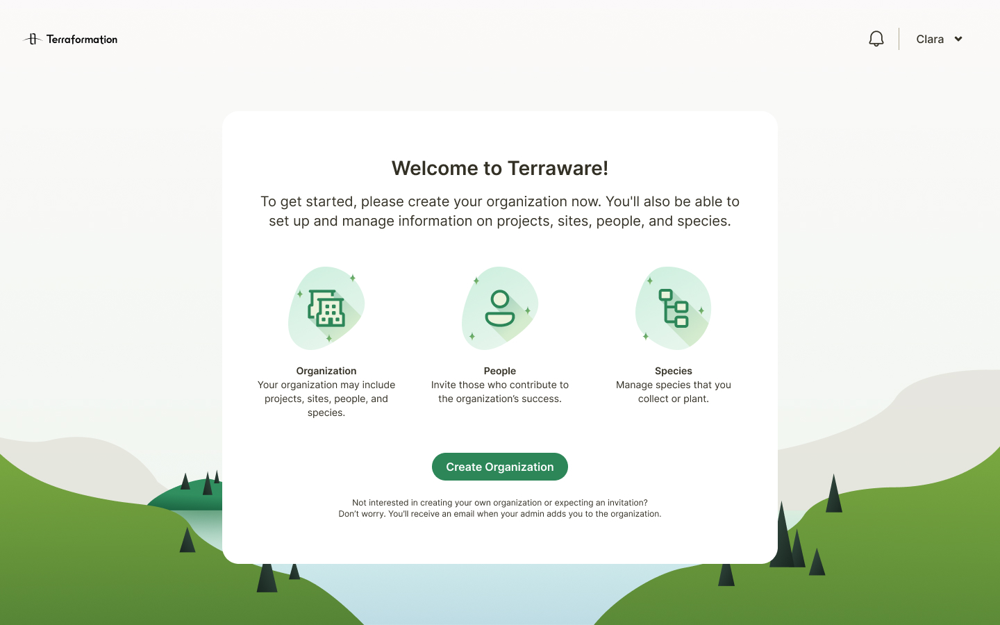
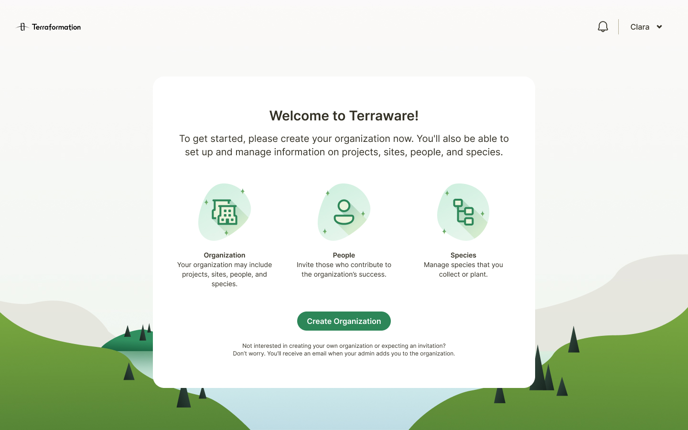
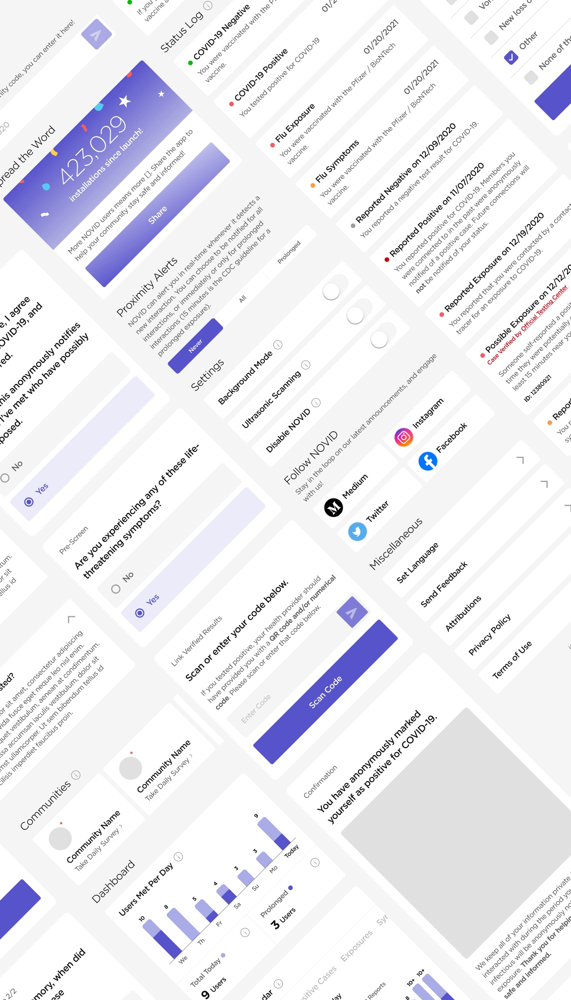
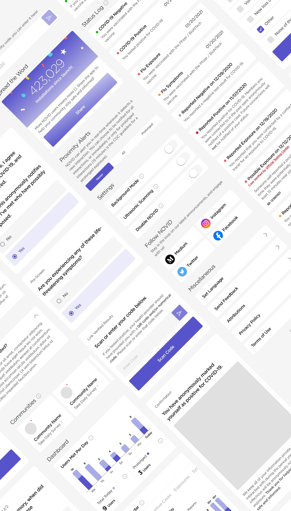

Hey, I'm Hannah, a Chinese-American designer based in the Bay Area. My work so far
centers mainly on visual & product design, but I also have a keen interest in motion,
both conventional and generative art, and data-visualization.
I previously worked at
Terraformation
and NOVID, on projects like
these:
Refreshing Terraformation's visual language
Rebranding product visuals to align with our company branding and values.
Deliverables
Team exercises, design options, final specs
Key Skills
Systems thinking, design tokens, interaction design, leadership
Collaborators
Chudo Loo (Senior Designer), Nicole Wilke (Product Manager)
Timeframe
Fall 2022
 



Re-vamping NOVID's onboarding flow
Animating and re-designing the app's onboarding flow to build user trust, particularly around enabling permissions.
Deliverables
Lottie .json animations, Figma screens and prototypes
Key Skills
Prototyping, animation, content design/copywriting
Timeframe
Summer 2020
Creating NOVID's design system
Defining and establishing a design system to bring cohesion and accessibility to NOVID's mobile app and website.
Deliverables
Figma components and libraries, specs for engineers
Key Skills
Systems thinking, designing for accessibility
Collaborators
Bennett Huffman (Product Designer)
Timeframe
Fall 2020

 

Though I'm a designer by trade, I've always been an artist at heart, and I believe that it shows in my work, both professional and personal.
filter by type:
filter by medium:
No matching projects found.


Social media and print assets I worked on during my time at Terraformation.


Social media assets I worked on during my time at NOVID.


Print assets I worked on during my time at NOVID.


Programmatic poetry visualizer built using text processing and InDesign scripts.


Creative coding projects made with p5.js.
3d audiovisual studies. hover to see controls and unmute
Cinema4d motion studies.


Cinema4d renders done for Lunar Gala, one of the largest fashion events in Pittsburgh.


Cinema4d studies.


Flameworked beads and figurines, made at the Pittsburgh Glass Center.

Parallels
A series of collages inspired by the pandemic.


Magazine collages.


Print case studies.


A set of playing cards featuring threatened animal species.


Miscellaneous vector illustrations.
Interactive wordplay.


Sketches done at the Carnegie Museum of Natural History.


Portraits and studies of people and animals.


Photo and landscape studies.


Mixed media studies.


A series of photos of dancers, experimenting with shutter speed.
To me, good design is clean,
intuitive, and satisfying, and great design both embodies and celebrates its
purpose. As a designer, I'm meticulous (I've been told I have "eagle eyes" ), and
always aim to optimize both form and function—I don't like compromising either.
Having worked at multiple startups, I'm comfortable with
fast-paced projects that benefit from a diverse skillset.
Outside of design, you'll find me enjoying concerts, trying to befriend every cat I
see, taking walks, and curating playlists,
inspiration, and little things. If you want to stay connected, reach out:
Add me on LinkedIn
Send me mail